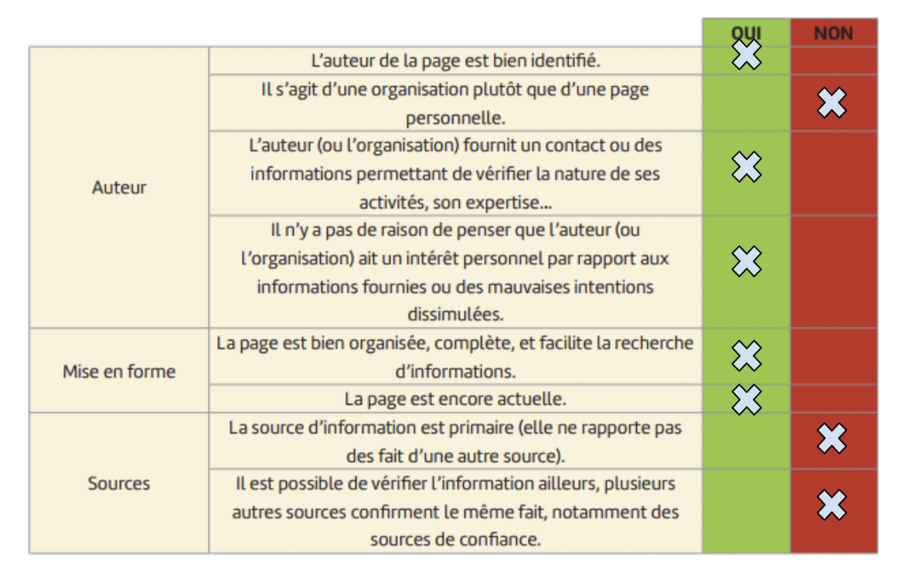
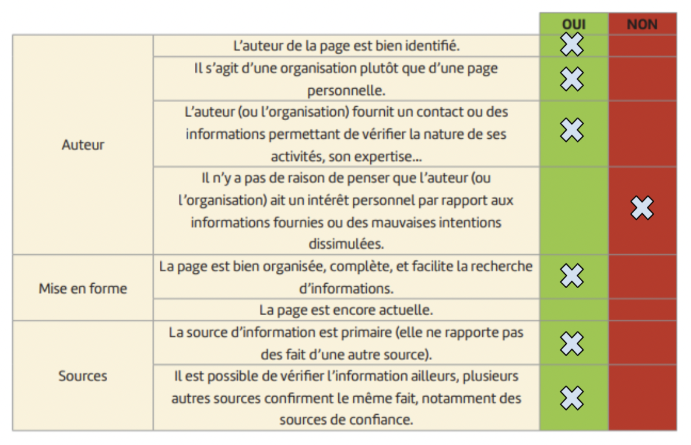

Qu'est-ce que la vaccination de manière générale?
La vaccination est un phénomène médical préventif qui vise à renforcer le système immunitaire contre des maladies dangereuses. Ce phénomène consiste à injecter des vaccins, qui sont sous la forme de substances contenant des fragments de germes, de virus ou de bactéries pathogènes atténués. En exposant le système immunitaire à ces éléments sans déclencher la maladie, la vaccination permet au corps de développer une réponse immunitaire sous la forme d’anticorps. Ainsi, en cas d'exposition par la suite à la maladie, le système immunitaire est mieux préparé pour la combattre. L’individu est alors protégé contre tout risque.
Bien que certaines théories du complot ne cessent d’envahir les esprits, la vaccination a joué un rôle majeur dans la réduction des taux de maladies et de mortalité.
Aujourd’hui ce n’est pas la vaccination que nous allons étudier, mais la fiabilité des sources que nous allons utiliser pour travailler sur ce sujet. Nous allons essayer de chercher les critères qui nous permettront de dire si une source est fiable ou non. Le sujet sur la vaccination est notre projet final, mais pour pouvoir le traiter, nous allons donc, dans un premier temps, définir les sites fiables.
Qu'est-ce qu’une source fiable?
Une source fiable est considérée comme une source qui met en avant un contenu exact que nous pouvons utiliser par la suite. Une source fiable doit être récente et vérifiée par des organismes et des experts du sujet. Si nous souhaitons travailler sur un sujet et cherchons des informations à propos de cela, nous devons veiller à ce que la source soit vérifiée. Pour cela, plusieurs critères sont à évaluer. Mais avant de rentrer dans le détail de ces critères, il est nécessaire de vérifier l’information dans plusieurs endroits. Si nous trouvons un même résultat, nous pouvons alors dire que la source est en partie fiable.
Mais pour qu’elle le soit totalement, d’autres facteurs sont à considérer comme notamment l’auteur, l’organisme, la date, etc… C’est ce que nous allons voir pour trois sites différents:
Après analyse de tous ces critères nous pouvons déduire que ce site est fiable car en effet il s’agit du site officiel d'une organisation mondiale. Il n’y a donc aucune raison de penser que cette organisation ait un intérêt personnel. De plus, tous les critères d’un site fiable sont remplis.
Deuxième site:
https://www.nature.com/articles/s41591-022-01728-z Après analyse de tous ces critères nous pouvons déduire que ce site n’est pas fiable car tout d’abord ce n’est pas un site primaire puisqu’il rapporte des faits d’une autre source. De plus, l’information n’est pas commune à d’autres sources. Plusieurs facteurs nous ont donc amenés à dire qu’il ne s’agit pas d’un site fiable.
Troisième site:
https://www.isdglobal.org/explainers/anti-vaccine-conspiracies/ Après analyse de tous ces critères nous pouvons déduire que ce site est fiable car en effet il s’agit d’un site qui présente des théories qu’il ne faut parfois pas considérées. De plus, c'est une source bien identifiée. Il n’y a donc aucune raison de penser que l’auteur de cette source ait un intérêt personnel. De plus, tous les critères d’une source fiable sont remplis.
Pour conclure nous pouvons dire que la fiabilité des sources se réfère à la crédibilité et à la confiance que l'on peut accorder à une information provenant d'une certaine origine. Une source fiable est généralement basée sur des faits vérifiables selon des critères précis. Évaluer la fiabilité des sources est crucial pour pouvoir utiliser les informations qu’elles mettent à notre disposition. Ainsi, lorsqu’on a besoin d’informations il est recommandé de consulter des sources fiables.